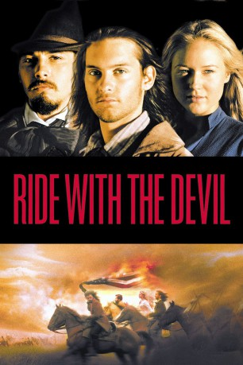
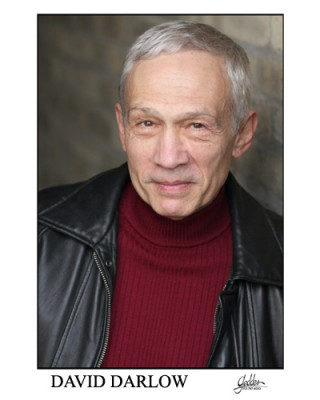
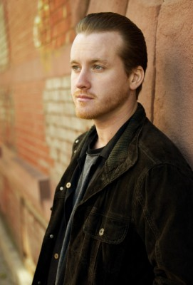

#4680 Ride with the Devil
 
 IMDB-Wertung: 6.8 / 10
IMDB-Wertung: 6.8 / 10  Tomatometer: 63
Tomatometer: 63  Metascore: 0
Metascore: 0 
Zwei Freunde zwischen den Fronten des US-Bürgerkriegs und der Liebe. 1862, Amerika im Bürgerkrieg, irgendwo an der Grenze zwischen Kansas und Missouri: Jake Roedel und Jack Bull Chiles, Kameraden seit Kindheitstagen, kämpfen gemeinsam auf der Seite der Südstaatler. Allerdings haben sie sich nicht der offiziellen Armee, sondern einer Rebellentruppe angeschlossen, die versteckt in den Wäldern zwischen allen Fronten ihren persönlichen Rachefeldzug führt. Als der Winter hereinbricht, ziehen sich zusammen mit ihren Freunden in ein Versteck im Wald zurück. Einzig die Besuche der jungen Witwe Sue Lee lassen sie für wenige glückliche Augenblicke das Kriegsgeschehen vergessen. Doch schon bald müssen sie erneut losziehen, in einen Kampf, der sie nicht nur die Jugend kostet, sondern manche von ihnen sogar das Leben...
Jahr: 1999
Dauer: 137 Minuten
FSK: 12
Land: USA Studio: Criterion Collection, TheTonspuren: DTS - ,
Untertitel:
Auflösung: 1080p (1920x816) Größe: 9809 MB
Genre: Drama, Liebe, Krieg, Western
Regisseur:  Ang Lee
Ang Lee
Drehbuch: Daniel Domscheit-Berg
Soundtrack:
Darsteller:
 Tobey Maguire als Jake Roedel
Tobey Maguire als Jake Roedel- Scott Sener als Guard
 Skeet Ulrich als Jack Bull Chiles
Skeet Ulrich als Jack Bull Chiles-  David Darlow als Asa Chiles
 Jim Caviezel als Black John
Jim Caviezel als Black John Jonathan Rhys Meyers als Pitt Mackeson
Jonathan Rhys Meyers als Pitt Mackeson Simon Baker als George Clyde
Simon Baker als George Clyde- Matthew Faber als Turner Rawls
-  Tom Guiry als Riley Crawford
- Jonathan Brandis als Cave Wyatt
 Jeffrey Wright als Daniel Holt
Jeffrey Wright als Daniel Holt Celia Weston als Mrs. Clark
Celia Weston als Mrs. Clark- Ric Averill als Federal at Farm
- Buck Baker als Federal at Farm
 Mark Ruffalo als Alf Bowden
Mark Ruffalo als Alf Bowden Stephen Mailer als Babe Hudspeth
Stephen Mailer als Babe Hudspeth Zach Grenier als Mr. Evans
Zach Grenier als Mr. Evans- Jewel Kilcher als Sue Lee Shelley
 Margo Martindale als Wilma Brown
Margo Martindale als Wilma Brown Tom Wilkinson als Orton Brown
Tom Wilkinson als Orton Brown James Urbaniak als Poker Player
James Urbaniak als Poker Player- David Rees Snell als Poker Player
- John Ales als Quantrill
- Joseph Patrick Moynihan als Mr. Riggs
- Nora Denney als Elderly Woman
- Roger Denesha als Lawrence Raider
- Cameron DeVictor als Shooting Witness , uncredited
- Nicole Dolci als Bride , uncredited
- Mat Hostetler als Rider , uncredited
- Patric Johnstone als Federal Cavalry / Bushwacker Cavalry , uncredited
- Charlotte Kyle als Villager , uncredited
- Paul Meier als George Bowden , uncredited
- Michael Owen als Federal Recruits Captain , uncredited
- Race Owen als Bushwacker , uncredited
- Jeremy W. Auman als Guard
- Glenn Q. Pierce als Minister
- Kathleen Warfel als Mrs. Chiles
- Zan McLeod als Wedding Musician - Guitar
- John Whelan als Wedding Musician - Accordion
- Roger Landes als Wedding Musician - Mandolin
- Jeffrey Dover als Wedding Musician - Drummer
- Tyler Johnson als Wedding Musician - Drummer
- Kelly Werts als Wedding Musician - Fiddle
- Michael W. Nash als Horton Lee, Sr.
- John Judd als Otto Roedel
- Don Shanks als George
- Jay Thorson als Ted
- Dean Vivian als Storekeeper
- Cheryl Weaver als Storekeeper's Wife
- Amber Griffith als Clark Girl
Datei: X:\HD-Western-1980-1999\Ride with the Devil (1999, FSK12, 1920x816).mkv seit 03.11.2016
Festplatte: HD Eastern+Western
 Es gibt insgesamt 29 Filme in der Gruppe 'HD-Western-1980-1999'
Es gibt insgesamt 29 Filme in der Gruppe 'HD-Western-1980-1999'